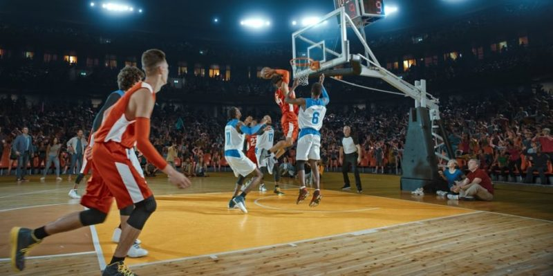
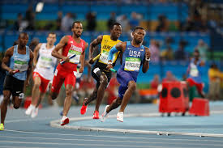
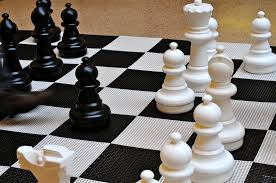
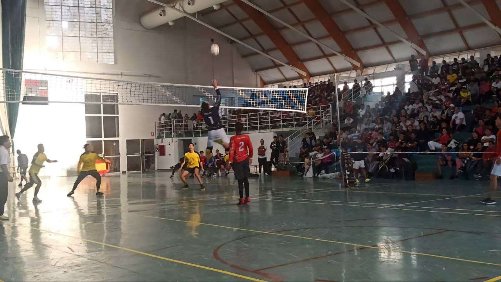

UNIDAD EDUCATIVA DE INICIACION Y DESARROLLO DEPORTIVO DEL AZUAY "UNEDID"
Deportes & Actividad Física
⚽
Indoor
En el mundo del deporte y la actividad física, "Indoor" se refiere a cualquier deporte, juego o ejercicio diseñado para realizarse en un espacio cerrado . A diferencia de los deportes al aire libre, las actividades indoor se adaptan a espacios como gimnasios, canchas cubiertas, pequeñas salas polivalentes o incluso el hogar .
El deporte indoor incluye desde versiones adaptadas de deportes tradicionales (como fútbol sala, baloncesto o hockey sala) hasta juegos específicos de persecución, estrategia y habilidad creados para maximizar el movimiento en espacios reducidos . También es un término muy utilizado en el ámbito del fitness para referirse a entrenamientos de alta intensidad (como spinning, boxeo o escalada)
Objetivo
Aunque existen muchas variantes, en los juegos de invasión indoor (como los que se juegan en el programa KS2 ), el objetivo principal es
universal: Introducir un objeto (pelota, disco, etc.) en la meta del equipo contrario (una portería, canasta o zona) mientras se defiende
la propia, superando a los oponentes mediante el trabajo en equipo, la estrategia y la habilidad técnica.
Sus reglas deportivas
Las reglas pueden variar según el deporte, pero esta es una lista de las normas más comunes y generales que encontraras en actividades
indoor como balonmano, fútbol sala o juegos modificados :
No Correr con el Objeto (en la mayoría de juegos): Si el deporte se juega con las manos, el jugador que tiene la pelota no puede
dar más de un cierto número de pasos (generalmente 3) sin botarla o pasarla. En deportes de pie, se controla con los pies.
Faltas Personales (Contacto): Está prohibido el contacto físico brusco, como
empujar, agarrar, golpear o sujetar al oponente.
Doble Contacto: Un mismo jugador no puede tocar la pelota dos veces seguidas
(excepto si ha habido un rebote).
Salidas de la Cancha: Si el objeto toca la línea o sale del área de juego,
la posesión pasa al equipo contrario, que lo pone en juego desde el punto de salida.
Zona de Portería (Área): En juegos con arco, los jugadores de campo no pueden entrar
en el área marcada frente a la portería. Solo el portero puede tocar la pelota
dentro de ella.
Posesión del Portero: Una vez que el portero atrapa la pelota, tiene un tiempo
límite (ej. 4 segundos) para ponerla de nuevo en juego.
Fuera de Juego: Dependiendo del deporte, puede existir una regla que impida a
los atacantes estar detrás de la última línea defensiva antes de recibir el pase.
Sanciones: Las faltas graves o tácticas (como cortar un ataque prometedor) pueden
ser sancionadas con:
Tiro Libre/ Falta: Se para el juego y se reanuda desde el punto de la falta.
Penalti: Si la falta es dentro del área de meta.
Tarjeta o Exclusión: Para faltas muy graves o conducta antideportiva (el jugador
sale unos minutos o todo el partido).
Técnicas
Técnicas Ofensivas:
El Pase: Usar diferentes tipos de pase (de pecho, picado, de costado, de dedos) con precisión y velocidad .
La Recepción (Control): Amortiguar el móvil para controlarlo al instante.
El Dribling/ Conducción: Botar o conducir el objeto para avanzar sin perder el control, manteniendo la cabeza alta para ver a los compañeros .
El Tiro a Portería: Precisión y potencia en el lanzamiento final.
Fintas y Amagues: Movimientos engañosos (de cuerpo, de piernas o de brazos) para desequilibrar al defensor .
Técnicas Defensivas:
Marcaje: Vigilar a un oponente específico para evitar que reciba el pase.
Interceptación: Anticiparse a la trayectoria del móvil para robar la posesión.
Desmarque: Moverse sin la pelota para recibir un pase.
Ejercicios para mejorar
Categoría 1: Velocidad y Agilidad (Para espacios pequeños)
Escalera de Agilidad: Realiza patrones como "Pasos rápidos" (un pie por cuadrado), "Salto tijera" y "Salto lateral". Mejora la
coordinación y la velocidad de pies .
Saltos Skater (Patinador): Salta de un lado a otro sobre una línea imaginaria, apoyándote en un pie y llevando el otro por detrás.
Desarrolla potencia lateral .
Carreras de Ida y Vuelta (Shuttles): Coloca dos conos a 5-10 metros. Corre de un cono a otro tocando el suelo con la mano. Ideal
para la aceleración y cambio de dirección.
Categoría 2: Físicos y de Fuerza (Circuito)
Burpees: Desde cuclillas, pies atrás (posición de plancha), pies adelante y salto explosivo con brazos arriba .
Mountain Climbers (Escaladores): En posición de plancha, lleva rodillas alternas hacia el pecho lo más rápido posible .
Saltos en Cuclillas (Squat Jumps): Baja en sentadilla y salta explosivamente hacia arriba .
Categoría 3: Técnicos en Movimiento (1 vs 1)
Ejercicio de 1 vs 1 con Cuadros: El entrenador pasa la pelota. El primero que llegue ataca la portería pequeña conduciendo.
Se practica la conducción y el 1×1 .
Rondos (Pases en Círculo): 5-6 jugadores en círculo, 1-2 en el centro robando. Se trabaja el pase rápido, la precisión y la presión defensiva.
Categoría 4. Calentamiento y Movilidad (Antes de empezar)
Movilidad Articular: Rotaciones de cuello, círculos con hombros, torsión de tronco y balanceos de piernas .
Saltos de Tijera (Criss Cross): Saltar intercambiando la posición de los pies (uno adelante, uno atrás) .
🏀
Baloncesto

El baloncesto (del inglés basket: canasta, y ball: pelota) es un deporte de equipo que se juega en una cancha rectangular cubierta (indoor).
Dos equipos se enfrentan con el objetivo de introducir una pelota en un aro elevado (canasta) que tiene una red, mientras impiden que el
equipo contrario lo haga.
Fue inventado en 1891 por el profesor James Naismith en Massachusetts (EE.UU.) como una actividad indoor para mantener a sus alumnos activos
durante el invierno. Hoy es uno de los deportes más populares del mundo, con ligas profesionales como la NBA (EE.UU.), la Euroliga y la ACB (España).
Objetivo
Anotar más puntos que el equipo contrario introduciendo el balón en la canasta del rival.
Cada tiro de campo (desde dentro de la línea de 3 puntos) vale 2 puntos.
Cada tiro desde fuera de la línea de 3 puntos vale 3 puntos.
Cada tiro libre (lanzamiento sin oposición tras una falta) vale 1 punto.
El partido se divide en cuartos (4 períodos). En la NBA son de 12 minutos; en el resto de competiciones (FIBA) son de 10 minutos. Gana quien
suma más puntos al final.
Sus reglas deportivas
TAquí tienes las reglas fundamentales del baloncesto actual basadas en el reglamento FIBA (Federación Internacional de Baloncesto):
Regla 1: No se puede correr con el balón sin botar (regla de los pasos). El jugador que recibe el balón en movimiento o que lo
recoge después de botar debe pasar o tirar. Solo puede dar 2 pasos como máximo sin botar. Si da 3 o más pasos, el árbitro señala
"pasos" y el balón pasa al equipo contrario, que lo pone en juego desde la banda. Esta regla evita que los jugadores avancen corriendo
con la pelota en las manos, lo que haría el deporte imposible de defender.
Regla 2: Doble drible. Está totalmente prohibido botar el balón, luego cogerlo con las dos manos y volver a botar. También está
prohibido botar con las dos manos a la vez. Si un jugador comete doble drible, el árbitro detiene el juego y el balón pasa al equipo
contrario, que lo saca desde el lateral. Esta regla obliga a los jugadores a decidir entre pasar, tirar o seguir botando, pero sin
poder reiniciar el bote una vez que lo han detenido.
Regla 3: Campo atrás (pases en campo propio). Una vez que el equipo atacante ha cruzado la línea de medio campo con el balón hacia el
aro rival, no puede devolver el balón a su propio campo. Si un jugador pasa hacia atrás o un compañero toca el balón estando en el
campo propio después de haber cruzado, se señala infracción de campo atrás y el balón se entrega al equipo contrario en el punto donde
se produjo la infracción. Esta regla impide que los equipos retrasen el juego constantemente.
Regla 4: Regla de los 8 segundos. El equipo que tiene el balón en su propio campo debe pasar al campo contrario en menos de 8 segundos.
Si no lo logra, el árbitro señala infracción y el balón pasa al equipo rival. Esta regla acelera el juego y evita que los equipos se
entretengan en su propio campo sin atacar.
Regla 5: Regla de los 24 segundos. El equipo atacante tiene 24 segundos para lanzar a canasta y que el balón toque el aro (o entre
directamente). Si el balón no toca el aro en ese tiempo, se señala infracción de 24 segundos y el balón pasa al equipo contrario. Si
el balón toca el aro y el equipo atacante coge el rebote, se reinician los 24 segundos. Esta regla mantiene un ritmo de juego rápido
y evita que los equipos retengan el balón sin atacar.
Regla 6: Regla de los 3 segundos en zona. Un jugador atacante no puede permanecer más de 3 segundos seguidos dentro del área restringida
(la zona pintada cerca del aro, también llamada "pintura" o "zona de 3 segundos") mientras su equipo tiene el balón. Si permanece más
tiempo sin intentar salir, el árbitro señala infracción y el balón pasa al equipo contrario. Esta regla evita que un jugador alto se
quede estacionado debajo del aro esperando el pase fácil.
Regla 7: Faltas personales. Está prohibido golpear, empujar, sujetar, cargar (embestir) o hacer cualquier tipo de contacto ilegal contra
un oponente. Si un jugador comete una falta personal, el árbitro para el juego y el equipo rival recibe la posesión (si la falta no fue
en acción de tiro) o tiros libres (si fue en acción de tiro y el lanzamiento falló). Cada falta cuenta para el límite personal del jugador
y para el límite de equipo.
Regla 8: Límite de faltas por jugador. Un jugador puede cometer un máximo de 5 faltas personales (en la NBA son 6). Al llegar a ese
límite, el jugador es eliminado (foul out) y no puede seguir jugando en ese partido. Si un entrenador intenta que un jugador eliminado
siga en cancha, se sanciona con falta técnica. Esta regla protege la integridad física de los jugadores y evita que un jugador cometa
faltas de manera reiterada e intencionada.
Regla 9: Faltas de equipo (bonus o bonus). Cuando un equipo acumula 4 faltas en un cuarto (en la NBA son 5 faltas por cuarto), a partir
de la siguiente falta, el equipo rival lanza 2 tiros libres (incluso si la falta no fue en acción de tiro). Al llegar a 10 faltas en un
cuarto (en algunas competiciones), se lanzan 2 tiros libres y además el equipo mantiene la posesión (falta con posesión). Esta regla
penaliza a los equipos que cometen muchas faltas y evita que usen las faltas como táctica defensiva excesiva.
Técnicas
Las técnicas se dividen en técnicas de ataque y técnicas de defensa.
Técnicas de ataque
Técnica 1: Bote o drible de control. Consiste en botar el balón lentamente, con la mano separada de la pelota y los dedos abiertos,
manteniendo el balón cerca del cuerpo (a la altura de la cadera o más abajo) para protegerlo del defensor. El bote debe ser suave y
controlado, sin mirar el balón, manteniendo la cabeza levantada para observar a los compañeros y rivales. Se usa cuando el defensor
está cerca y necesitas avanzar con seguridad sin perder el balón.
Técnica 2: Bote de velocidad. Es el bote que se utiliza cuando se corre en un contraataque o cuando no hay defensores cerca. Se bota
el balón más adelante del cuerpo (hacia el frente), con un bote más alto (a la altura de la cintura o más) y más largo, de manera que
el balón llegue al suelo y rebote hacia adelante mientras el jugador corre a máxima velocidad. El bote debe ser con la punta de los
dedos, no con la palma. Permite avanzar rápido, pero hay que estar atento para no perder el control.
Técnica 3: Bote de protección (bote bajo). Se utiliza cuando un defensor está muy pegado y presiona. Se bota el balón muy bajo (a la
altura de la rodilla o incluso más abajo), con el cuerpo de lado entre el balón y el defensor. El brazo que no bota se usa como protección
para evitar que el defensor robe (sin empujar). Las piernas están semiflexionadas para poder cambiar de dirección rápidamente. Es
fundamental en situaciones de presión defensiva.
Técnica 4: Bote con cambio de dirección (crossover). Es un tipo de bote en el que el jugador, mientras avanza, cambia el balón de una
mano a la otra por delante del cuerpo (o entre las piernas, o por detrás de la espalda), para desequilibrar al defensor y superarlo.
El cambio de dirección debe ser rápido y acompañado de un movimiento de hombros y caderas para engañar al defensor. Es una de las
técnicas más usadas en el 1 contra 1.
Técnicas defensivas
Técnica 1: Posición básica defensiva. El defensor se coloca con las rodillas flexionadas (en cuclillas), la espalda recta, los pies
separados a la anchura de los hombros, el peso del cuerpo sobre las puntas de los pies (los talones ligeramente levantados), los brazos
activos (ligeramente separados del cuerpo) y las manos preparadas para interceptar o molestar el pase. Los ojos deben estar fijos en la
cintura o el pecho del atacante (no en sus ojos ni en el balón), porque los movimientos de cadera indican hacia dónde va a moverse. Esta
posición permite desplazarse rápido en cualquier dirección.
Técnica 2: Desplazamiento defensivo (paso de arrastre). Para moverse lateralmente en defensa sin perder la posición, se utiliza el paso
de arrastre: se da un paso lateral con la pierna hacia el lado hacia el que se quiere desplazar, y la otra pierna se arrastra hasta
juntarse con la primera (sin cruzar las piernas). El objetivo es mantener siempre un pie en el suelo como base, nunca cruzar una pierna
por delante de la otra porque eso te dejaría desequilibrado. Los pies se deslizan o arrastran, nunca se levantan del suelo más de lo
necesario.
Técnica 3: Marcaje individual. Es la defensa en la que cada defensor tiene asignado a un atacante específico. El defensor sigue a
ese atacante a donde vaya por la cancha, intentando impedir que reciba el balón, que la anote o que pase. Si el atacante se mueve sin
balón, el defensor debe estar siempre entre él y la canasta (defensa de frente). Si el atacante recibe el balón, el defensor se coloca a
un brazo de distancia (o pegado si es un buen tirador) y trata de molestar su tiro o su pase.
Técnica 4: Marcaje zonal. Cada defensor se encarga de defender una zona específica de la cancha (por ejemplo, la esquina derecha o la
zona de 3 segundos izquierda). Cuando un atacante entra en su zona, el defensor lo marca; cuando el atacante sale de la zona, el defensor
lo "entrega" a otro compañero y se queda preparado para el siguiente rival que entre. El marcaje zonal es más estático y se utiliza para
proteger especialmente la zona pintada (cerca del aro) o para contrarrestar equipos con muy buenos tiradores exteriores. La comunicación
entre los defensores es clave.
Técnica 5: Tapón o bloqueo de tiro (block). Cuando un atacante tira a canasta, el defensor puede saltar e intentar impedir o desviar el
balón sin hacer contacto con el brazo o la mano del atacante. Las reglas permiten tocar el balón siempre que la mano esté en contacto solo
con el balón y no con la mano del tirador. Para hacer un tapón limpio, el defensor debe saltar verticalmente (no hacia adelante), mantener
los brazos extendidos y rectos hacia arriba, y tratar de golpear el balón en el punto más alto de la trayectoria. No se puede "palmear" el
balón hacia abajo con violencia porque suele considerarse falta.
Ejercicios para mejorar
Aquí tienes ejercicios prácticos organizados por categorías.
Ejercicios de manejo de balón y drible
Ejercicio 1: Slaps (golpes al balón). De pie, con el balón sujeto con las dos manos a la altura de la cintura. Golpea el balón con una
mano abierta, alternando rápidamente entre la mano izquierda y la derecha. Golpea con fuerza, no solo toques. El balón no debe caerse.
El objetivo es calentar los dedos, las manos y las muñecas, además de mejorar la sensibilidad y el control del balón. Se recomienda hacer
30 golpes con cada mano (alternando) durante 1-2 minutos al inicio de cada entrenamiento.
Ejercicio 2: Círculos alrededor de la cabeza, cintura y piernas. De pie, con el balón en las manos. Rodea tu cabeza con el balón
(pasándolo de una mano a la otra) durante 10 segundos en una dirección y luego 10 segundos en la dirección contraria. Después, repite
el mismo movimiento rodeando tu cintura (10 segundos cada dirección). Finalmente, rodea cada pierna (primero la derecha, luego la izquierda)
durante 10 segundos cada dirección. Este ejercicio mejora la coordinación mano-ojo y la habilidad para mover el balón alrededor del cuerpo
sin perderlo.
Ejercicio 3: Drible en V (drible estático delante del cuerpo). De pie con las piernas separadas (un poco más anchas que los hombros) y
las rodillas flexionadas. Bota el balón delante del cuerpo, pasándolo de la mano derecha a la izquierda y de la izquierda a la derecha
en forma de "V" (el balón se mueve de izquierda a derecha y de derecha a izquierda botando). La altura del bote debe ser baja (a la altura
de la rodilla aproximadamente). No mires el balón; mantén la cabeza levantada. Haz 30 segundos de drible en V y luego descansa 10 segundos.
Repite 3-4 veces. Trabaja el control del balón y la coordinación de ambas manos.
Ejercicio 4: Drible entre piernas (estático). Con la misma posición inicial (piernas separadas, rodillas flexionadas). Bota el balón
pasándolo por debajo de una pierna: el balón entra por delante de la pierna y sale por detrás, pasando de una mano a la otra. Primero
practica solo con la pierna derecha (10 veces), luego con la izquierda (10 veces), luego alternando pierna derecha e izquierda (10 veces
más). La clave es dar un bote fuerte y seco, y que la mano que recibe esté preparada. Este ejercicio es más avanzado y mejora el control
en espacios reducidos.
Ejercicio 5: Drible a la espalda (estático). Misma posición inicial. Bota el balón pasándolo por detrás de tu espalda, de una mano a la
otra. El movimiento debe ser suave y controlado. La mano que bota empuja el balón hacia atrás y la otra mano lo recibe por detrás de la
cadera. Es más difícil que el drible entre piernas porque no ves el balón. Practica 10 pases por detrás con cada mano, luego 10 alternando.
Este ejercicio mejora la sensibilidad periférica y la seguridad en el manejo.
Ejercicio 6: Drible con dos pelotas a la vez. Toma dos balones. Bota ambos al mismo tiempo (sincronizados) a la altura de la cadera. Haz
30 botos sincronizados. Luego alterna: bota un balón más alto y el otro más bajo, pero sin perder ninguno. Después, intenta hacer
movimientos diferentes con cada mano: con la derecha bota en V, con la izquierda bota hacia delante y atrás. Es un ejercicio excelente
para la coordinación cerebral y para forzar la habilidad con la mano no dominante. Si se te cae un balón, no te frustres; sigue intentándolo.
Ejercicio 7: Lanzamiento sin salto a tabla (mecánica de tiro). Colócate a 1-2 metros de la canasta, de frente al tablero. Sin saltar,
tira el balón a la tabla (al rectángulo blanco pintado) con una sola mano (la mano de tiro), mientras la otra mano solo guía el balón.
El balón debe tocar el tablero y entrar en la canasta suavemente. Concéntrate en la mecánica: rodillas flexionadas, codo alineado, muñeca
que da el último impulso (los dedos apuntan hacia abajo al final). Haz 20 tiros de cada lado de la canasta y 20 de frente. Este ejercicio
establece los fundamentos del tiro.
Ejercicio 8: Tiro en suspensión desde 5 posiciones. Coloca conos o marcas en 5 puntos de la cancha: esquina izquierda, ala izquierda
(45°), cabeza (frente al aro desde la línea de tiros libres), ala derecha (45°) y esquina derecha. Desde cada posición, lanza 10 tiros
en suspensión (saltando). No importa si entran o no al principio; lo importante es la técnica: salta, eleva el balón a la altura de la
frente, suelta en el punto más alto, muñeca final. Después de cada posición, descansa 30 segundos y anota cuántos encestaste (para medir
tu progreso a lo largo del tiempo).
🏃♂️
Atletismo

El atletismo es el deporte más antiguo y completo de la historia, considerado el "deporte rey" de los Juegos Olímpicos. Consiste en un conjunto
de disciplinas que involucran carreras, saltos, lanzamientos y pruebas combinadas, todas basadas en gestos naturales del ser humano como correr, saltar y lanzar. Se practica principalmente en un estadio de atletismo que cuenta con una pista ovalada de 400 metros (para las carreras), zonas de
saltos (fosa de arena y colchonetas) y zonas de lanzamiento (círculos y áreas de caída). El atletismo agrupa más de 20 especialidades diferentes, lo que lo convierte en el deporte con mayor variedad de pruebas.
Objetivo
El objetivo general del atletismo es superar a los rivales en cada disciplina específica. En las carreras, el objetivo es completar una distancia determinada en el menor tiempo posible, llegando primero a la meta. En los saltos (longitud, triple salto, altura y pértiga), el objetivo es alcanzar la mayor distancia o altura posible con un número limitado de intentos. En los lanzamientos (peso, disco, jabalina y martillo), el objetivo es enviar el implemento a la mayor distancia posible dentro de un sector de caída delimitado. En las pruebas combinadas (decatlón para hombres y heptatlón para mujeres), el objetivo es sumar la mayor cantidad de puntos al competir en múltiples disciplinas a lo largo de dos días consecutivos. Gana el atleta que, en su prueba, obtiene la mejor marca (tiempo, distancia o altura) o la mayor puntuación total.
Sus reglas deportivas
Regla 1: En pruebas de velocidad (100m, 200m, 400m), los atletas deben usar tacos de salida y permanecer en su carril asignado durante toda
la carrera. Si un atleta pisa la línea que delimita su carril o invade otro carril, puede ser descalificado.
Regla 2: La salida nula (false start) se penaliza con descalificación inmediata tras una sola infracción. Si un atleta inicia su movimiento antes del disparo, los sensores de los tacos lo detectan y se anula la salida.
Regla 3: Un atleta completa la carrera cuando cualquier parte de su torso cruza la línea de meta. No vale la mano, el pie ni la cabeza; solo el tronco determina el orden de llegada.
Regla 4: En carreras de relevos (4x100m y 4x400m), el testigo debe pasarse dentro de una zona de transferencia de 20 metros. Si el pase se hace fuera de esa zona, el equipo es descalificado.
Regla 5: En carreras con vallas, está permitido derribar las vallas con los pies, pero no con las manos ni intencionalmente. Pasar por fuera de una valla o por debajo del travesaño es motivo de descalificación.
Regla 6: En salto de longitud y triple salto, el atleta debe despegar antes de la tabla de batida. Si pisa más allá de la tabla, el salto es nulo y no se mide.
Regla 7: En salto de altura y pértiga, cada atleta tiene 3 intentos por altura. Si falla los 3, queda eliminado; puede pasar alturas sin intentarlas, pero no puede volver atrás.
Regla 8: En lanzamientos de peso, disco, martillo y jabalina, el atleta no puede salir del círculo o pasillo antes de que el implemento caiga al suelo. Tampoco puede pisar las líneas delimitadoras.
Regla 9: En lanzamiento de jabalina, la jabalina debe caer con la punta de metal primero. Si cae de plano o de costado, el lanzamiento es nulo.
Regla 10: En decatlón y heptatlón, los atletas compiten en múltiples pruebas durante dos días. Cada prueba puntúa según tablas oficiales, y gana quien suma más puntos al final.
Regla 11: En carreras de 800m o más, los atletas pueden salir de sus carriles después del primer codo o de una zona de convergencia señalizada. Pueden ocupar el carril interior libremente.
Regla 12: Los atletas pueden recibir agua y bebidas solo en puestos de avituallamiento autorizados (generalmente cada 2-3 km en pruebas largas). Recibir ayuda externa fuera de estos puestos puede provocar descalificación.
Regla 13: El calzado puede tener un máximo de 11 clavos (púas) que no sobresalgan más de 9 mm en carreras (hasta 12 mm en saltos y lanzamientos). No se permiten dispositivos con muelles o resortes.
Regla 14: Si un atleta obstaculiza a otro (empujando, bloqueando o forzándolo a salirse de su carril), puede ser descalificado. La obstaculización intencionada es falta grave.
Regla 15: El dopaje está totalmente prohibido. Los ganadores y atletas seleccionados al azar son sometidos a controles antidopaje. Un positivo conlleva descalificación y suspensión de 2 a 4 años.
Técnicas
Técnica 1 (salida de tacos): Consta de tres fases: "a sus puestos" (pies en tacos, manos en el suelo), "listos" (caderas elevadas, peso adelante) y disparo (impulso explosivo). Los primeros pasos son muy cortos y rápidos con el tronco inclinado a 45°.
Técnica 2 (aceleración inicial): Durante los primeros 10-15 metros, el tronco se mantiene muy inclinado hacia adelante y los apoyos son solo con el metatarso (sin apoyar el talón). La zancada es corta (30-40 cm) y la frecuencia muy alta.
Técnica 3 (carrera de máxima velocidad): El tronco se endereza hasta una inclinación de solo 5°, la cabeza mira al frente y los brazos se mueven en ángulo de 90°. Las zancadas son largas (2.20-2.50 m) y la frecuencia alcanza 4-5 zancadas por segundo.
Técnica 4 (respiración rítmica): En carreras de fondo se usa el patrón 2 pasos inhalando y 2 exhalando (2-2) o 3-2 para ritmos más lentos. La inhalación y exhalación se hacen por la boca para mayor entrada de aire.
Técnica 5 (postura corporal correcta): Cabeza erguida mirando al frente, hombros relajados y hacia atrás, cadera alta y alineada con la columna. El pie debe caer directamente debajo del centro de masa, nunca por delante.
Técnica 6 (paso de vallas): La pierna de ataque se extiende hacia adelante casi recta, y la pierna de tracción se flexiona y abre lateralmente. El tronco se inclina hacia adelante al pasar para no saltar demasiado alto.
Técnica 7 (enlace en relevos): El corredor que recibe extiende el brazo hacia atrás con la palma arriba o abajo, y el que entrega dice "¡ya!" al llegar a distancia de brazo. El receptor no debe mirar hacia atrás.
Técnica 8 (carrera de impulso en longitud): Consta de 15-25 zancadas progresivas, acelerando gradualmente. Los últimos 5-6 pasos son más rápidos y rasos, y la mirada se fija en la tabla de batida.
Técnica 9 (batida en salto de longitud): El pie de batida se apoya activamente justo antes de la tabla, con la pierna casi extendida pero no bloqueada. El otro pie (de oscilación) se eleva rápido con la rodilla flexionada.
Técnica 10 (técnicas de vuelo en longitud): En el aire se usa "tijeras" (pedaleo de piernas), "paso extendido" (cuerpo recto) o "caída doblada" (rodillas al pecho). Al caer, se debe evitar caer hacia atrás porque esa huella es la que se mide.
Técnica 11 (triple salto - fases): Primera fase "hop": despega y cae con el mismo pie. Segunda fase "step": despega con ese pie y cae con el contrario. Tercera fase "jump": cae en la fosa como en longitud.
Técnica 12 (salto de altura - Fosbury Flop): Carrera curva hacia el listón, despegue con el pie lejano al listón, giro de espalda al pasar y caída sobre los hombros. El cuerpo se arquea sobre el listón para superarlo sin derribarlo.
Técnica 13 (salto con pértiga - carrera y plantado): Carrera de 20-30 metros con la pértiga, plantado de la pértiga en la caja metálica, y salto impulsándose con los brazos. El atleta suelta la pértiga al pasar el listón y cae sobre la colchoneta.
Técnica 14 (lanzamiento de peso - técnica O'Brien): El atleta se coloca de espaldas al área de lanzamiento, realiza un salto hacia atrás dentro del círculo, gira y empuja el peso desde el hombro. El peso no debe bajar del mentón durante el impulso.
Ejercicios para mejorar
Ejercicio 1 (talones al glúteo): Correr en el sitio llevando los talones a tocar los glúteos, con una frecuencia rápida y las rodillas apuntando al suelo. Se hacen 3 series de 30 segundos. Trabaja la flexión de rodilla y la frecuencia de zancada.
Ejercicio 2 (rodillas arriba): Correr en el sitio o avanzando elevando las rodillas hasta la altura de la cadera (o más). Se hacen 3 series de 30 metros. Mejora la elevación de rodilla y la potencia de despegue.
Ejercicio 3 (skipping progresivo): Combinación de talones-glúteo y rodillas-arriba en secuencia, avanzando de forma controlada. Se hacen 4 repeticiones de 30 metros. Es el ejercicio fundamental para la técnica de carrera.
Ejercicio 4 (zancadas o lanzadas): Avanzar dando pasos largos y profundos, hundiendo la cadera hasta que la rodilla trasera casi toque el suelo. Se hacen 10 repeticiones por pierna x 3 series. Trabaja amplitud de zancada y fuerza de piernas.
Ejercicio 5 (multisaltos): Saltos largos y continuos alternando una pierna y luego la otra (como un triple salto continuo). Se hacen 5 repeticiones x 4 series. Desarrolla la potencia elástica y la coordinación para saltos.
Ejercicio 6 (sentadillas con salto): Bajar en sentadilla profunda y saltar explosivamente hacia arriba, ayudándose con los brazos. Se hacen 10 repeticiones x 3 series. Mejora la fuerza explosiva de las piernas para velocidad y saltos.
Ejercicio 7 (saltos al cajón): Saltar sobre una caja de 30-50 cm de altura desde parado, y bajar con control (no saltar hacia atrás). Se hacen 10 saltos x 3 series. Desarrolla potencia de salida y capacidad de reacción.
Ejercicio 8 (peso muerto rumano con mancuernas): Con piernas semirrígidas, flexionar la cadera hacia atrás manteniendo la espalda recta, y volver a subir. Se hacen 8-10 repeticiones x 3 series. Fortalece isquiotibiales (clave para la velocidad).
Ejercicio 9 (plancha abdominal): Mantener la posición de plancha con los antebrazos apoyados y el cuerpo recto (sin hundir la cadera ni levantarla). Se hacen 3 series de 30-60 segundos. Mejora la estabilidad del core para mantener la postura al correr.
Ejercicio 10 (burpees): Desde de pie, agacharse, echar los pies atrás (posición de plancha), subir los pies hacia las manos y saltar explosivamente. Se hacen 10 repeticiones x 3 series. Trabaja resistencia muscular y capacidad anaeróbica.
Ejercicio 11 (saltos de longitud desde parado): Desde parado, con pies juntos, saltar lo más lejos posible sin carrera previa. Se hacen 5 saltos x 3 series. Mide la potencia explosiva sin técnica de carrera.
Ejercicio 12 (desplazamientos laterales - side shuffles): Moverse lateralmente con piernas semiflexionadas, sin cruzar las piernas (paso de arrastre). Se hacen 3 series de 30 segundos. Activa aductores y abductores, mejora la agilidad lateral.
Ejercicio 13 (cuestas o cuestas arriba): Correr cuesta arriba en una pendiente suave (5-10% de inclinación) durante 60-80 metros. Se hacen 6-8 repeticiones con descanso caminando hacia abajo. Mejora la fuerza específica de carrera y la zancada.
Ejercicio 14 (pogo jumps - saltos de tobillo): Saltos cortos y rápidos en el sitio con las piernas rectas, solo flexionando los tobillos (sin doblar rodillas). Se hacen 3 series de 20 saltos. Activa el tendón de Aquiles y mejora la rigidez elástica.
🏊♀️
Natación
La natación es un deporte que consiste en el desplazamiento de una persona en el agua utilizando movimientos coordinados de brazos, piernas y el resto del cuerpo, sin tocar el fondo de la piscina. Es uno de los deportes más completos y saludables porque trabaja prácticamente todos los grupos musculares mientras mejora la resistencia cardiovascular, y además el agua elimina el impacto sobre las articulaciones (ideal para personas con problemas de espalda o rodillas). La natación se puede practicar a nivel recreativo (por placer y salud) o competitivo (en piscina de 50 metros o en aguas abiertas). En competición, se divide en cuatro estilos principales: crol (estilo libre), espalda, braza y mariposa, además de pruebas combinadas donde se nadan los cuatro estilos en un mismo recorrido (estilos individuales). Las competiciones oficiales (Juegos Olímpicos, Campeonatos Mundiales) se realizan en piscinas de 50 metros de largo (piscina olímpica) con 8 o 10 carriles, y también existen pruebas en piscina de 25 metros (piscina corta) donde los récords son diferentes por los numerosos virajes.
Objetivo
El objetivo general de la natación competitiva es recorrer una distancia determinada en el menor tiempo posible, cumpliendo estrictamente con la técnica específica de cada estilo y con las reglas de viraje y salida. En las pruebas individuales (desde 50 metros hasta 1500 metros en piscina), gana el nadador que toca la pared primero al final de la distancia. En las pruebas de relevos (4x100m y 4x200m estilo libre, y 4x100m estilos), gana el equipo que completa la distancia total en el menor tiempo, con cada nadador realizando su segmento y tocando la pared para que el siguiente compañero comience (la salida del siguiente nadador puede ser anticipada, pero no puede despegar antes de que el compañero toque la pared). En aguas abiertas (5km, 10km, 25km), el objetivo es completar el recorrido en el menor tiempo posible, pero la salida es masiva (todos juntos desde la playa o una plataforma) y no hay carriles, por lo que la navegación (saber nadar en línea recta) es una habilidad clave. Gana el nadador que toca la meta primero, y no hay tiempos por eliminatorias como en piscina.
Sus reglas deportivas
Regla 1: En estilo libre (crol), el nadador puede nadar cualquier estilo, aunque todos usan crol por ser el más rápido. Parte del cuerpo debe romper la superficie en todo momento excepto en virajes y primeros 15 metros tras salida.
Regla 2: En espalda, el nadador debe nadar siempre mirando hacia arriba (boca arriba) y solo puede girar hacia el pecho durante el viraje o al finalizar. La salida se realiza dentro del agua, agarrado a las paredes de salida.
Regla 3: En braza, los brazos deben moverse simultáneamente y de forma simétrica (como una rana), y las piernas deben hacer la patada de rana. La cabeza debe romper la superficie en cada ciclo completo de brazada.
Regla 4: En mariposa, los brazos se mueven simultáneamente hacia adelante sobre el agua, y las piernas realizan la patada de delfín (ambas piernas juntas). El cuerpo hace un movimiento ondulatorio desde la cabeza hasta los pies.
Regla 5: En estilos individuales (combinado), se nadan los cuatro estilos en este orden: mariposa → espalda → braza → crol. Cada estilo debe cumplir sus reglas específicas durante su segmento correspondiente.
Regla 6: La salida en crol, braza y mariposa se realiza con un salto desde el podio (bloque de salida). El nadador debe permanecer quieto hasta la señal acústica (disparo o pitido).
Regla 7: Una salida en falso (false start) provoca la descalificación automática del nadador. En competiciones internacionales, una sola salida en falso es suficiente para ser descalificado.
Regla 8: En cada viraje, el nadador debe tocar la pared con alguna parte del cuerpo. En espalda, puede tocar la pared mientras está de espaldas o girar sobre el pecho en el último golpe de brazo.
Regla 9: Cada nadador debe permanecer en su carril asignado durante toda la prueba. Si un nadador interfiere con otro nadador (por ejemplo, invadiendo su carril), puede ser descalificado.
Regla 10: El final de la prueba ocurre cuando alguna parte del cuerpo del nadador toca la pared al final del último largo. En llegadas ajustadas, los jueces usan el sistema de toque electrónico (placas en la pared).
Regla 11: En crol y espalda, el nadador no puede caminar o impulsarse con el fondo de la piscina en ningún momento. Siempre debe estar en contacto con el agua o impulsándose de la pared.
Regla 12: En mariposa y braza, los brazos deben recuperarse por encima del agua (mariposa) o por debajo (braza), pero siempre de forma simultánea. Los movimientos asimétricos son falta.
Regla 13: En braza, las manos no pueden pasar más allá de la línea de la cadera durante la brazada. Tampoco se puede usar la patada de delfín (solo patada de rana).
Regla 14: En relevos, el nadador que sigue no puede despegar del podio hasta que el compañero que termina toque la pared. Si despega antes, el equipo es descalificado.
Regla 15: En pruebas de 50 metros, no hay viraje (solo un largo). En pruebas de 100m, 200m, 400m, 800m y 1500m, hay múltiples virajes (tantos como largos se naden).
Regla 16: El nado subacuático está permitido solo hasta 15 metros después de la salida y después de cada viraje. Pasados 15 metros, la cabeza debe romper la superficie.
Regla 17: Los nadadores pueden usar gafas, gorro y bañador de competición (de tejido textil o poliuretano, con ciertas restricciones de grosor y flotabilidad). No se permiten dispositivos propulsores.
Regla 18: En caso de empate en el tiempo (misma centésima), se declaran dos ganadores o se realiza un desempate (swim-off) si es necesario para deshacer el empate en eliminatorias.
Regla 19: En piscina de 50 metros (olímpica), las pruebas se nadan en largos de 50m. En piscina de 25 metros (corta), los largos son de 25m y hay el doble de virajes.
Regla 20: El nadador que abandona una prueba voluntariamente o no se presenta a la salida es descalificado de esa prueba, pero puede competir en otras si no había inscripción condicionada.
Técnicas
Técnica 1 (posición corporal en crol): Cuerpo horizontal y alineado, cabeza mirando hacia abajo con el agua cubriendo la nuca, caderas cerca de la superficie. El cuerpo rota ligeramente (30-40°) con cada brazada para alargar el alcance.
Técnica 1 (posición corporal en crol): Cuerpo horizontal y alineado, cabeza mirando hacia abajo con el agua cubriendo la nuca, caderas cerca de la superficie. El cuerpo rota ligeramente (30-40°) con cada brazada para alargar el alcance.
Técnica 3 (fase aérea del brazo en crol - recuperación): El codo sale primero del agua y se mantiene elevado (más alto que la mano) mientras el brazo se relaja hacia adelante. La mano entra suavemente al agua delante del hombro.
Técnica 4 (patada de crol): Patada alterna y constante desde la cadera (no desde la rodilla), con los pies relajados y apuntando hacia atrás. La amplitud es pequeña pero la frecuencia es alta (3-6 patadas por ciclo de brazos).
Técnica 5 (respiración en crol): Girar la cabeza hacia un lado cuando el brazo del mismo lado se recupera sobre el agua. Inhalar por la boca, exhalar por la nariz o boca bajo el agua mientras el brazo está dentro.
Técnica 6 (posición corporal en espalda): Cuerpo horizontal sobre la espalda, cabeza mirando hacia arriba con las orejas justo en la superficie. La barbilla ligeramente hacia el pecho evita que la cabeza se hunda.
Técnica 7 (brazada de espalda): Movimiento alterno similar al crol pero boca arriba: el brazo entra con el meñique primero y tira del agua en "S" hacia el costado del cuerpo. La recuperación es con el brazo recto por encima del agua.
Técnica 8 (patada de espalda): Patada alterna similar a la del crol pero boca arriba, manteniendo las piernas cerca de la superficie. Las rodillas no deben romper la superficie; el movimiento es desde la cadera.
Técnica 9 (posición corporal en braza): Cuerpo casi horizontal pero con el pecho ligeramente elevado. Los hombros suben y bajan durante el ciclo, y la cabeza sale del agua para respirar en cada brazada.
Técnica 10 (brazada de braza): Manos juntas delante del pecho, se abren hacia los lados y hacia atrás (haciendo presión sobre el agua), y luego vuelven a juntarse delante del pecho. El movimiento es corto y potente.
Técnica 11 (patada de braza - rana): Piernas dobladas hacia los glúteos, pies rotados hacia afuera (dorsiflexión), y patada hacia atrás y hacia afuera. Las piernas se juntan al final del movimiento con las plantas de los pies mirando atrás.
Técnica 12 (respiración en braza): Inhalar cuando levantas la cabeza hacia adelante (en la fase de brazada que las manos se juntan bajo el pecho). Exhalar mientras extiendes los brazos hacia adelante y pateas.
Técnica 13 (posición corporal en mariposa): Movimiento ondulatorio desde la cabeza hasta los pies (como un delfín). El pecho y las caderas suben y bajan en fases alternas con un ritmo continuo.
Técnica 14 (brazada de mariposa): Ambos brazos entran al agua juntos por delante de los hombros, tiran del agua hacia atrás hasta las caderas, y luego salen juntos por el aire para recuperarse. Movimiento simultáneo y potente.
Técnica 15 (patada de delfín en mariposa): Ambas piernas juntas se mueven hacia abajo y hacia arriba simultáneamente. La patada hacia abajo es la más potente y coincide con la entrada de los brazos al agua.
Técnica 16 (respiración en mariposa): Levantar la cabeza hacia adelante (mirando al frente) durante la fase de tirón de los brazos bajo el agua. Inhalar rápido y volver a sumergir la cabeza antes de que los brazos vuelvan a entrar.
Técnica 17 (viraje de crol y espalda - voltereta): Cuando la cabeza está a un metro de la pared, se hace una voltereta hacia adelante (crol) o hacia atrás (espalda), los pies tocan la pared, y se impulsa hacia atrás. El cuerpo sale girando para quedar boca abajo.
Técnica 18 (viraje de braza y mariposa - toque y giro): Se toca la pared con ambas manos simultáneamente a la misma altura. Luego se suelta una mano, se gira el cuerpo, se apoyan los pies en la pared y se impulsa hacia atrás.
Técnica 19 (salida desde el podio - crol, braza, mariposa): Manos agarradas al borde del podio, pies apoyados en el borde trasero del podio (o en el agua), y al disparo se lanza el cuerpo hacia adelante en posición de flecha. El cuerpo debe entrar al agua por un mismo punto.
Técnica 20 (salida de espalda desde dentro del agua): Manos agarradas a las paredes de salida o a las barras horizontales, pies apoyados en la pared (por debajo del agua), y al disparo se impulsa hacia atrás arqueando la espalda. La cabeza sale del agua después de unos metros.
Ejercicios para mejorar
Ejercicio 1 (nadar a "punto muerto" - catch up): Extiende un brazo hacia adelante y no lo muevas hasta que el otro brazo complete su brazada y lo "alcance". Alterna con cada brazo cada 25m. Trabaja la coordinación y el alargamiento de la brazada.
Ejercicio 2 (nadar con un solo brazo): Nada usando solo un brazo mientras el otro permanece extendido hacia adelante o pegado al cuerpo. Alterna cada 25m (derecha e izquierda). Ayuda a aislar y corregir la técnica de cada brazo.
Ejercicio 3 (fase subacuática exagerada): Al nadar, concéntrate en hacer el tirón subacuático completo: mano entra, agarra, tira en "S" y termina junto al muslo. Notarás mayor propulsión. Haz series de 50m.
Ejercicio 4 (puños cerrados - closed fists): Nada con los puños cerrados en lugar de manos abiertas. Te obliga a usar el antebrazo para agarrar agua. Mejora la sensibilidad del agarre cuando vuelves a abrir las manos.
Ejercicio 5 (remo o sculling - manos en "8"): En posición horizontal, haz pequeños movimientos laterales con las manos (como si amasaras agua) sin mover los brazos. Trabaja la sensación de agarre del agua y la presión en las palmas.
Ejercicio 6 (patada con tabla - flotador): Sostén una tabla con los brazos extendidos y patea solo con las piernas (crol, espalda o mariposa). Haz 4x50m con descanso 20". Fortalece las piernas y mejora la posición corporal.
Ejercicio 7 (patada lateral con un brazo extendido): Boca abajo, mantén un brazo extendido hacia adelante y el otro pegado al cuerpo. Gira la cabeza hacia el lado del brazo extendido para respirar. Trabaja la patada y la alineación.
Ejercicio 8 (patada vertical en el lugar): En agua profunda (donde no toques fondo), mantente en posición vertical y patea para mantener la cabeza fuera del agua. Haz 3 series de 30 segundos. Excelente para fortalecer piernas y core.
Ejercicio 9 (patada de espalda con tabla): Boca arriba, sostén la tabla sobre el pecho o sobre la cabeza (brazos extendidos), y patea solo con las piernas. Haz 4x50m. Mejora la patada de espalda sin la distracción de los brazos.
Ejercicio 10 (patada de mariposa con tabla - delfín): Boca abajo, sostén la tabla y realiza la patada ondulatoria de mariposa (ambas piernas juntas). Siente la ondulación desde las caderas y los abdominales. Haz 4x25m.
Ejercicio 11 (patada de braza con tabla): Boca abajo, sostén la tabla y practica la patada de rana específica de braza (rodillas juntas, pies hacia afuera, patada hacia atrás). Haz 4x25m con descanso 20". Trabaja la coordinación de piernas.
Ejercicio 12 (respirar cada 3, 5 o 7 brazadas en crol): Haz series de 50m respirando cada 3 brazadas, luego cada 5, luego cada 7. Aumenta la capacidad pulmonar y mejora el control del ritmo respiratorio.
Ejercicio 13 (respiración bilateral - alternar lados): Respira un ciclo hacia la derecha, otro hacia la izquierda, otro hacia la derecha, etc. Haz 4x50m. Fundamental para nadar recto en aguas abiertas y mantener técnica simétrica.
Ejercicio 14 (respiración al lado desfavorable): Si normalmente respiras hacia tu lado derecho, practica respirar solo hacia el izquierdo durante 100m. Mejora la simetría y la capacidad de respirar en cualquier dirección.
Ejercicio 15 (nadar combinando un brazo + punto muerto): Nada una brazada con un brazo, luego espera con ambos brazos extendidos (punto muerto), luego brazada con el otro brazo, y espera de nuevo. Trabaja la coordinación y el ritmo.
Ejercicio 16 (nadar exagerando la rotación corporal en crol): Gira el cuerpo mucho más de lo normal (casi de lado en cada brazada) durante 50m. Luego reduce gradualmente a 30-40°. Ayuda a entender el rolido y la conexión cadera-hombros.
Ejercicio 17 (nadar suave - nado cognitivo o consciente): Nada muy lento (25m en 45-60 segundos), prestando atención consciente a cada movimiento: entrada de mano, rotación, respiración, patada. Es un ejercicio de técnica pura.
Ejercicio 18 (entrenamiento de virajes - volteretas repetidas): Practica volteretas en el agua sin nadar: desde el borde de la piscina, haz volteretas una tras otra cada 5 metros. Haz 10 volteretas. Automatiza el viraje de crol y espalda.
Ejercicio 19 (salidas desde el podio - posiciones): Practica la salida desde el podio: "a sus puestos" (pies en el borde), "listos" (cuerpo inclinado), y lanzamiento en posición de flecha. Haz 10 salidas. Mejora la reacción y la entrada al agua.
Ejercicio 20 (nadar con aletas cortas): Usa aletas cortas (no largas de buceo) para nadar crol o mariposa. Las aletas aumentan la velocidad de la patada y ayudan a sentir la posición corporal correcta. Haz 4x50m.
♟
Ajedrez

El ajedrez es un juego de mesa estratégico para dos jugadores que se disputa sobre un tablero cuadrado de 64 casillas (8x8) de colores alternos, conocido como "tablero de ajedrez" . Cada jugador comienza la partida con 16 piezas: un rey, una dama, dos torres, dos alfiles, dos caballos y ocho peones, cada una con movimientos específicos y diferentes capacidades de desplazamiento sobre el tablero . El juego tiene más de 1000 años de antigüedad y es considerado uno de los juegos de mesa más antiguos del mundo, además de ser reconocido como deporte por el Comité Olímpico Internacional . Las piezas blancas y negras se colocan simétricamente al inicio, con la regla nemotécnica "dama en su color" (la dama blanca en casilla blanca y la dama negra en casilla negra) .
Objetivo
El objetivo fundamental del ajedrez es dar jaque mate al rey del oponente, es decir, amenazar al rey adversario con una captura de la que no pueda escapar mediante ningún movimiento legal . El jugador que consigue esto gana la partida inmediatamente, sin necesidad de capturar físicamente el rey. Si un rey está amenazado de captura, el jugador debe realizar cualquier movimiento que saque a su rey del peligro (moverlo, bloquear la amenaza o capturar la pieza atacante) . Cuando un jugador no tiene ningún movimiento legal disponible pero su rey no está en jaque, la partida termina en tablas (empate) por ahogado. Las partidas también pueden terminar en tablas por acuerdo mutuo, por repetición de posición tres veces, o por falta de material suficiente para dar mate . Tradicionalmente, las blancas inician la partida, lo que les otorga una ligera ventaja estadística (aproximadamente 55% de los puntos frente al 45% de las negras) .
Sus reglas deportivas
Regla 1: El tablero se coloca con una casilla blanca en la esquina inferior derecha de cada jugador. Las blancas se ubican en las filas 1 y 2, mientras que las negras ocupan las filas 7 y 8 .
Regla 2: La dama se coloca en la casilla central del mismo color que sus piezas (blanca en casilla blanca, negra en casilla negra). El rey se sitúa en la casilla restante junto a la dama .
Regla 3: Los jugadores mueven alternativamente una pieza por turno, comenzando siempre las blancas. No se puede "pasar" el turno voluntariamente .
Regla 4: Cada pieza se mueve de manera específica: la torre en horizontal/vertical, el alfil en diagonal, la dama en ambas direcciones . El caballo se mueve en forma de "L" (dos casillas en una dirección y una perpendicular) y es la única pieza que puede saltar sobre otras .
Regla 5: El rey se mueve una casilla en cualquier dirección y nunca puede moverse a una casilla donde quedaría en jaque. El rey no puede ser capturado bajo ninguna circunstancia .
Regla 6: Los peones avanzan una casilla hacia adelante (dos en su primer movimiento) y capturan en diagonal. Los peones no pueden retroceder nunca .
Regla 7: El enroque es un movimiento especial que mueve el rey dos casillas hacia una torre, y la torre salta a la casilla junto al rey. Solo es posible si ni el rey ni la torre han movido antes y no hay piezas entre ellos .
Regla 8: No se puede enrocar si el rey está en jaque, si la casilla por la que pasa está atacada, o si la casilla de destino está atacada. El rey no puede pasar por casillas amenazadas .rlo.
Regla 9: La captura al paso permite a un peón capturar otro peón que acaba de avanzar dos casillas junto a él. Solo puede realizarse inmediatamente después del avance del peón rival .
Regla 10: Cuando un peón llega a la última fila (octava para blancas, primera para negras), debe coronarse a dama, torre, alfil o caballo. Opcionalmente, puede coronarse a más de una dama (máximo 9) .
Regla 11: El jaque ocurre cuando una pieza amenaza directamente al rey enemigo. El jugador debe responder obligatoriamente protegiendo a su rey (moviéndolo, bloqueando o capturando) .
Regla 12: El jaque mate es la situación donde el rey está en jaque y no existe ningún movimiento legal para salir de él. Quien da jaque mate gana la partida inmediatamente .
Regla 13: El ahogado ocurre cuando un jugador no tiene movimientos legales disponibles pero su rey no está en jaque. Esto produce tablas (empate) inmediatas .
Regla 14: La partida termina en tablas si la misma posición se repite tres veces con el mismo jugador para mover. También hay tablas por falta de material suficiente para dar mate .
Regla 15: No se puede tocar una pieza sin intención de moverla ("pieza tocada, pieza movida"). Si se toca una pieza del oponente, se debe capturar si es posible .
Regla 16: En competiciones con reloj, el jugador que excede su tiempo límite pierde la partida. La única excepción es si el oponente no tiene material suficiente para dar mate .
Regla 17: Si una posición es tan desfavorable que cualquier movimiento empeora la situación, se llama zugzwang. El jugador está obligado a mover aunque todos los movimientos sean malos .
Técnicas
Técnica 1 (Desarrollo de piezas): Consiste en sacar los caballos y alfiles (piezas menores) en las primeras jugadas antes que la dama. El objetivo es controlar el centro y preparar el enroque temprano para proteger al rey .
Técnica 2 (Control del centro): Dominar las casillas centrales d4, d5, e4 y e5 permitiendo mayor movilidad de las piezas. Un buen control del centro facilita ataques y defensas en todo el tablero .
Técnica 3 (Apertura Española o Ruy López): Secuencia e4 e5, Cf3 Cc6, Ab5 que presiona al caballo de c6. Es una de las aperturas más clásicas y estratégicas para las blancas .
Técnica 4 (Gambito de Dama): Las blancas juegan d4, d5, c4 "regalando" un peón por control del centro. Si el rival acepta, se obtiene un desarrollo más rápido de piezas .
Técnica 5 (Defensa Siciliana): Las negras responden a e4 con c5 creando una posición asimétrica y de contrajuego. Es la defensa más popular entre jugadores agresivos y de alto nivel .
Técnica 6 (Jaque doble): Una jugada donde dos piezas atacan al rey simultáneamente, obligándolo a moverse. Es especialmente potente cuando el jaque lo da un caballo porque no se puede bloquear .
Técnica 7 (Clavada o pín): Una pieza queda inmovilizada porque detrás de ella está el rey o una pieza más valiosa. No puede moverse sin exponer la pieza de mayor valor a captura .
Técnica 8 (Ataque a la descubierta): Mover una pieza libera la línea de ataque de otra pieza oculta detrás. Si la pieza descubierta ataca al rey, se llama jaque a la descubierta .
Técnica 9 (Desviación o atracción): Sacrificar una pieza para apartar una pieza defensora de su función clave. Se obliga al rival a mover una pieza que protegía una casilla o a otra pieza valiosa .
Técnica 10 (Eliminación del defensor): Capturar la pieza que protege a otra pieza más valiosa. Tras eliminar al defensor, la pieza objetivo queda indefensa y puede ser capturada .
Técnica 11 (Horquilla o tenedor): Una sola pieza (generalmente caballo o peón) ataca dos piezas enemigas a la vez. El rival solo puede salvar una de ellas .
Técnica 12 (Mate de la última fila): Una torre o dama da jaque al rey atrapado en su última fila por sus propias piezas. Es uno de los mates más comunes en principiantes .
Técnica 13 (Intercepción): Colocar una pieza entre dos piezas atacantes para bloquear líneas de ataque. Se usa para cortar la comunicación entre piezas rivales que se apoyan mutuamente .
Técnica 14 (Sobrecarga): Una pieza rival tiene demasiadas funciones defensivas (protege dos piezas a la vez). Al atacar una de ellas, la pieza sobrecargada no puede defender ambas .
Técnica 15 (Red de mate): Rodear al rey rival cortando todas sus casillas de escape sin dar jaque inmediato. Una vez creada la red, cualquier jaque será inevitablemente mate .
Técnica 16 (Sacrificio de calidad): Entregar una torre por una pieza menor (caballo o alfil) para obtener una ventaja posicional. Suele ser el primer paso de una combinación más larga y ganadora .
Técnica 17 (Zugzwang): Forzar al rival a moverse cuando cualquier movimiento empeora su posición. Es especialmente efectivo en finales donde quedan pocas piezas en el tablero .
Ejercicios para mejorar
Ejercicio 1 (Resolver mates en 1): Coloca posiciones donde se pueda dar jaque mate en una sola jugada. Intenta encontrar la jugada ganadora en menos de 30 segundos. Desarrolla la visión inmediata de mate .
Ejercicio 2 (Resolver mates en 2): Posiciones donde se requiere una jugada previa antes del mate final. La primera jugada suele ser un jaque, una captura o una amenaza que fuerza la respuesta rival .
Ejercicio 3 (Problemas de tenedor u horquilla): Identifica posiciones donde un caballo o peón pueda atacar dos piezas a la vez. Practica este patrón táctico con al menos 10 ejercicios diarios .
Ejercicio 4 (Problemas de clavada): Encuentra la pieza enemiga que no puede moverse sin exponer una pieza mayor. Aprende a identificar clavadas absolutas (contra el rey) y relativas (contra dama o torre) .
Ejercicio 5 (Calentamiento de 5 minutos): Resuelve 3-5 acertijos sencillos cronometrados antes de cada sesión. Activa el pensamiento táctico y prepara la mente para cálculos más profundos .
Ejercicio 6 (Ejercicios de patrón diario): Dedica 10 minutos diarios a practicar un solo tema táctico (por ejemplo, solo jaques dobles). La repetición espaciada ayuda a automatizar el reconocimiento de patrones .
Ejercicio 7 (Análisis de partidas propias): Revisa tus partidas perdidas y busca las tácticas que pasaste por alto. Hazlo físicamente en un tablero real para mejorar la memoria visual .
Ejercicio 8 (Práctica de aperturas): Juega las primeras 5-10 jugadas de una apertura famosa (Española, Italiana, Siciliana). Memoriza las ideas clave de desarrollo y control del centro .
Ejercicio 9 (Ejercicio de cálculo): Sin mover piezas, calcula 3 jugadas adelante para una posición dada. Comienza con posiciones simples y aumenta la profundidad gradualmente .
Ejercicio 10 (Rompecabezas de torres en la última fila): Practica mates de última fila con torres y damas. Aprende a identificar reyes encerrados por sus propios peones .
Ejercicio 11 (Ejercicios de desviación): Posiciones donde debes sacrificar una pieza para apartar un defensor clave. El objetivo es dejar desprotegida la pieza o casilla que quieres atacar .
Ejercicio 12 (Entrenamiento con ajedrez a ciegas): Visualiza posiciones sin ver el tablero físico usando solo la memoria. Mejora la capacidad de cálculo y la concentración mental .
Ejercicio 13 (Práctica de finales básicos): Juega finales simples como rey y dama contra rey, o rey y torre contra rey. Aprende las técnicas exactas para dar mate en cada tipo de final .
Ejercicio 14 (Estudio de partidas de maestros): Analiza partidas de grandes jugadores como Morphy o Fischer. Comprende cómo aplicaban las tácticas y estrategias en situaciones reales .
Ejercicio 15 (Ejercicios con repetición espaciada): Resuelve los mismos acertijos después de 1, 3, 7 y 14 días. Este método consolida los patrones en la memoria a largo plazo .
Ejercicio 16 (Entrenamiento de reflejos tácticos): Usa plataformas como Chess.com o Lichess para resolver puzzles cronometrados. El objetivo es reconocer patrones tácticos en menos de 10 segundos .
Ejercicio 17 (Práctica de eliminación del defensor): Identifica qué pieza rival protege a otra y busca formas de capturarla primero. Es una técnica fundamental para ataques exitosos .
🏐
Ecuavoley

El ecuavóley es una variante ecuatoriana del voleibol tradicional que nació en los barrios populares de Quito y otras ciudades andinas de Ecuador, siendo uno de los deportes más practicados en el país después del fútbol . A diferencia del voleibol convencional que se juega con 6 jugadores por lado, el ecuavóley se caracteriza por equipos de 3 jugadores por equipo (colocador, volador y servidor) y una cancha más pequeña, lo que lo hace más rápido, dinámico y con menos toques por posesión . El balón es similar al de voleibol pero un poco más pesado, y se juega tanto en canchas de tierra como de cemento o parquet, al aire libre o en espacios cubiertos. Las posiciones son fijas (cada jugador tiene un rol especializado), a diferencia del voleibol tradicional donde todos rotan, lo que permite un alto nivel de especialización técnica en cada puesto .
Objetivo
El objetivo fundamental del ecuavóley es enviar el balón por encima de la red al campo contrario impidiendo que el rival lo devuelva, logrando que el balón toque el suelo del equipo contrario para anotar punto . Cada vez que el balón toca el suelo rival o el equipo contrario comete una falta (saque fuera, retención, toque de red, etc.), el equipo que atacó anota un punto. El partido se juega generalmente al mejor de 3 sets (ganan 2) o al mejor de 5 sets (ganan 3), y cada set se juega a 15 puntos con diferencia mínima de 2 puntos . La principal diferencia con el voleibol es la regla de los 2 toques (máximo 2 toques por equipo para devolver el balón, no 3 como en voleibol), lo que acelera enormemente el juego y exige una toma de decisiones mucho más rápida. Gana el equipo que primero alcanza el número de sets establecido o los puntos necesarios según la competencia.
Sus reglas deportivas
Regla 1: El ecuavóley se juega con equipos de 3 jugadores por lado (colocador, volador y servidor). Las posiciones son fijas, no hay rotación como en el voleibol tradicional .
Regla 2: La regla más característica es el máximo de 2 toques por equipo para devolver el balón. No hay 3 toques como en voleibol, lo que acelera el juego .
Regla 3: Los 2 toques pueden ser: pase de antebrazos (mancheta), pase de dedos (voleo) o remate. El equipo debe decidir rápido cómo usar sus dos toques .
Regla 4: El primer toque suele ser la recepción del saque o ataque rival (con mancheta). El segundo toque debe enviar el balón al campo contrario, ya sea con pase o remate.
Regla 5: El balón puede tocar la red durante el saque y seguir siendo válido. Esto es diferente al voleibol tradicional donde el saque no puede tocar la red .
Regla 6: No se puede retener, empujar o acompañar el balón con las manos. El contacto debe ser limpio y seco (golpe de antebrazos o toque de dedos seco) .
Regla 7: Un jugador no puede tocar la red durante el juego. Si lo hace, es falta y punto para el equipo contrario, igual que en voleibol.li>
Regla 8: No se puede pisar el campo contrario por debajo de la red ni interferir en el juego del rival. La invasión es falta.
Regla 9: El balón que toca la línea se considera dentro del campo. Fuera es cuando cae completamente fuera de las líneas laterales o de fondo.
Regla 10: Cada punto se anota cuando el balón toca el suelo rival o el equipo rival comete una falta. No hay "cambio de saque" como en voleibol antiguo.
Regla 11: El saque se realiza desde detrás de la línea de fondo, puede ser de abajo o de arriba (con salto o sin salto). El balón debe pasar por encima de la red .
Regla 12: En el saque, el balón no puede caer fuera del campo contrario. El saque largo (fuera de fondo) otorga punto al rival.
Regla 13: El balón puede ser golpeado con cualquier parte del cuerpo de forma involuntaria. Pero el golpe intencional con pierna o pie no está permitido.
Regla 14: Si dos jugadores del mismo equipo tocan el balón simultáneamente, se cuenta como un solo toque. Cualquiera de ellos puede hacer el siguiente toque.
Regla 15: El partido se juega al mejor de 3 sets (ganan 2) o al mejor de 5 sets (ganan 3). Cada set se juega a 15 puntos con diferencia de 2.
Regla 16: En caso de empate 14-14, se continúa jugando hasta que un equipo tenga ventaja de 2 puntos (ejemplo: 16-14, 17-15). No hay límite máximo de puntos.
Regla 17: El servidor no puede pisar la línea de fondo al momento del saque. Si lo hace, es falta y se anota punto para el rival.
Regla 18: El bloqueo no cuenta como toque. Después de un bloqueo, el equipo que bloqueó tiene derecho a 2 toques adicionales para devolver el balón.
Regla 19: Los jugadores no pueden solicitar tiempo muerto en medio de la jugada. Solo cuando el balón está muerto (fuera o falta señalada).
Regla 20: El jugador que es sustituido puede volver a ingresar una sola vez por set (excepto por lesión). Las sustituciones son limitadas.
Técnicas
Técnica 1 (Recepción o mancheta - voleo bajo): Se utilizan los antebrazos para recibir el saque o remate rival, con las manos juntas (una sobre otra, pulgares paralelos). Brazos extendidos y cuerpo flexionado para dirigir el balón al colocador .
Técnica 2 (Colocación o voleo alto): El colocador recibe el balón (generalmente de la recepción) con las manos en forma de copa sobre la frente. Con un movimiento de muñecas y dedos, eleva el balón cerca de la red para que el volador remate .
Técnica 3 (Remate o ataque): El volador salta, extiende el brazo hacia atrás y golpea el balón con la mano abierta, enviándolo hacia abajo en el campo contrario. Es el tiro más ofensivo y poderoso .
Técnica 4 (Saque de abajo): Golpe con el brazo recto y la mano cerrada o abierta, llevando el brazo hacia atrás y golpeando el balón a la altura de la cintura. Saque más controlado y seguro para principiantes .
Técnica 5 (Saque de arriba con salto): Lanzar el balón hacia arriba, saltar y golpear con la mano abierta en el punto más alto del salto. Es el saque más potente y difícil de recibir .
Técnica 6 (Finta o dejada): En lugar de rematar fuerte, se toca suavemente el balón para que caiga justo detrás de la red o en un espacio vacío. Es un recurso táctico engañoso.
Técnica 7 (Bloqueo): El jugador cerca de la red salta con brazos extendidos verticalmente para interceptar el remate rival o reducir su potencia. No cuenta como toque.
Técnica 8 (Defensa en el fondo): Los jugadores en la parte trasera del campo se preparan para recibir remates fuertes con mancheta. Deben anticipar la dirección del ataque rival .
Técnica 9 (Anticipación o lectura de juego): Observar los movimientos del atacante rival (hombros, brazo, muñeca) para predecir hacia dónde va a rematar. Fundamental para una buena defensa.
Técnica 10 (Desplazamiento lateral en defensa): Moverse rápido de un lado a otro con pasos cortos (paso de arrastre) para llegar al balón. Las rodillas semiflexionadas y el peso en las puntas de los pies.
Técnica 11 (Pase de dedos en suspensión): El colocador salta ligeramente para alcanzar un balón alto y poder colocarlo con mayor precisión. Se usa cuando el primer pase no es perfecto.
Técnica 12 (Remate con muñeca): Al golpear el balón, se usa un movimiento rápido de muñeca para dar dirección y efecto, haciendo que el balón caiga más rápido o cambie de trayectoria.
Técnica 13 (Cobertura de cancha - sistema defensivo): Los 3 jugadores cubren el campo completo: el volador cerca de la red (bloqueo/ataque), colocador en el medio (pases), servidor en el fondo (defensa).
Técnica 14 (Pase de espaldas): El colocador, cuando el balón le llega por detrás, puede realizar un pase de dedos por encima de la cabeza hacia atrás. Requiere mucha práctica y coordinación.
Técnica 15 (Golpe de antebrazos con una mano): En situaciones de emergencia (balón muy lejos o bajo), se puede recibir con un solo antebrazo extendido. Menos controlado pero permite salvar balones difíciles.
Ejercicios para mejorar
Ejercicio 1 (Pases de antebrazos contra pared - mancheta): Golpear el balón contra una pared con los antebrazos repetidamente, manteniendo el control y la posición. Haz 3 series de 20 repeticiones .
Ejercicio 2 (Pases de dedos contra pared - voleo): Hacer voleos de dedos contra la pared, controlando altura y dirección del balón. Haz 3 series de 20 repeticiones .
Ejercicio 3 (Toque de dedos a uno mismo sin que caiga): Lanzar el balón hacia arriba y hacer pases de dedos a uno mismo manteniéndolo en el aire. 3 series de 30 segundos .
Ejercicio 4 (Saques a zona marcada): Colocar conos o aros en el campo contrario e intentar que el saque caiga dentro de esa zona. 10 saques de cada tipo (abajo/arriba) .
Ejercicio 5 (Recepción de saques en parejas): Un compañero te saca desde el otro lado de la red. Recibes con mancheta y diriges el balón hacia una zona marcada. 20 recepciones .
Ejercicio 6 (Recepción de remates desde el fondo): Un compañero remata desde su campo y tú, desde el fondo del tuyo, recibes el remate con mancheta. 15 recepciones x 3 series .
Ejercicio 7 (Bloqueo frente a la red sin balón): Saltar frente a la red con brazos extendidos verticalmente, simulando el bloqueo. 15 saltos x 3 series. Mejora la altura del bloqueo.
Ejercicio 8 (Ejercicio de colocación con precisión): El entrenador lanza balones altos al colocador, quien debe enviarlos a una zona específica cerca de la red (donde ataca el volador). 20 colocaciones .
Ejercicio 9 (Remate desde posición de colocador): El colocador lanza balón alto al volador, quien salta y remata hacia la zona contraria. El otro jugador (servidor) defiende. 20 remates .
Ejercicio 10 (Circuito de 2 toques en media cancha): Juego reducido donde cada equipo debe usar exactamente 2 toques por posesión. Obliga a pensar rápido y coordinar los movimientos .
Ejercicio 11 (Rotación de posiciones en cada punto): Jugar un partido donde después de cada punto los jugadores rotan posiciones (todos aprenden a colocador, volador y servidor). 15 minutos .
Ejercicio 12 (Defensa de campo completo 3 contra 1): Un atacante remata desde su campo, 3 defensores intentan recibir y devolver con 2 toques. Cambiar atacante cada 5 remates .
Ejercicio 13 (Pase y ataque en cadena - combinación ofensiva): Secuencia: pase del servidor → colocación del colocador → remate del volador. Los 3 jugadores participan en una misma jugada ofensiva .
Ejercicio 14 (Juego de 3 contra 3 con regla de saque obligatorio de arriba): Solo se permite saque de arriba con salto. Obliga a los jugadores a practicar el saque más potente en situación real de partido .
Ejercicio 15 (Desplazamientos laterales con recepción): Colocar dos conos separados 3 metros. Desplazarse lateralmente de un cono a otro y al llegar recibir un pase/saque. 10 desplazamientos x 3 series .